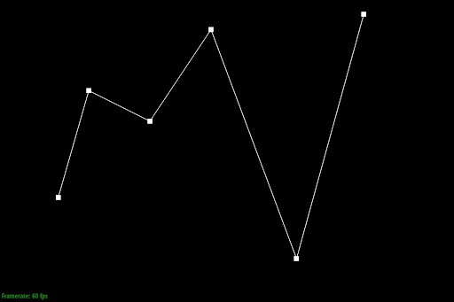
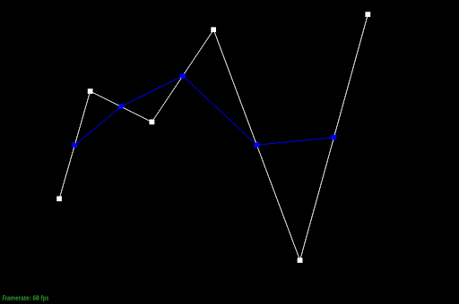
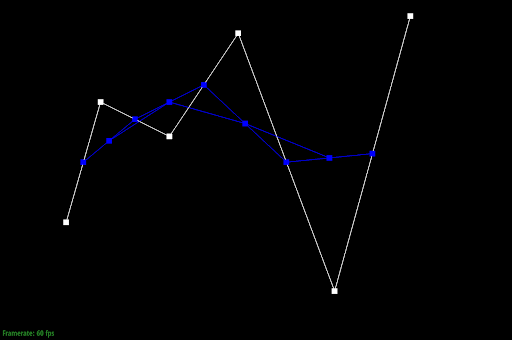
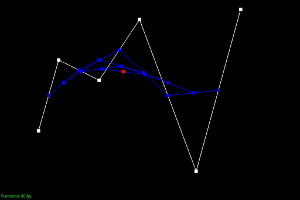
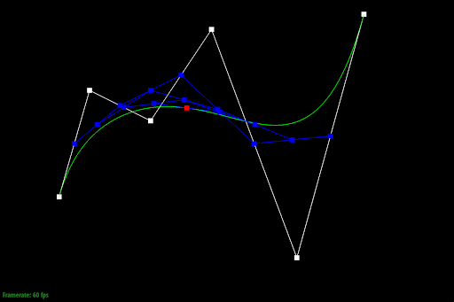
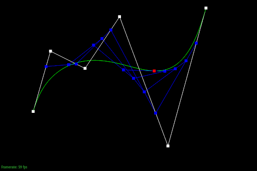

Overview
In this project, we implemented Bezier curve and surface calculations with de Casteljau's algorithm. Additonally, we implemented some area-weighted vertex normal calculations for Phong shading, edge flipping and splitting for mesh upsampling, which allows us to convert a rough polygon surface to one that looks more fine, accurate, and of higher image quality, which these methods allowed to create higher quality and higher resolution meshes.
Section I: Bezier Curves and Surfaces
Part 1: Bezier Curves with 1D de Casteljau Subdivision
Briefly explain de Casteljau's algorithm and how you implemented it in order to evaluate Bezier curves.De Casteljau's algorithm is this recursive algorithm where given n points, you call a lerp function, which returns n-1 points based on a parameter t. You continually do this until you get just 1 point. Now as you vary t from 0 to 1, it will trace out the Bezier curve!
Take a look at the provided .bzc files and create your own Bezier curve with 6 control points of your choosing. Use this Bezier curve for your screenshots below.
YOUR RESPONSE GOES HERE
Show screenshots of each step / level of the evaluation from the original control points down to the final evaluated point. Press E to step through. Toggle C to show the completed Bezier curve as well.
|

|

|
|

|
|
|
|

|
|

|

|
Show a screenshot of a slightly different Bezier curve by moving the original control points around and modifying the parameter \(t\) via mouse scrolling.
Modified Bezier curve with different \(t\) value:
Part 2: Bezier Surfaces with Separable 1D de Casteljau
Briefly explain how de Casteljau algorithm extends to Bezier surfaces and how you implemented it in order to evaluate Bezier surfaces.Bezier surfaces are 2 dimensional versions of Bezier curve, which means we can use de Casteljau's algorithm to generate Bezier surfaces. Given a grid of points, we can generate a Bezier curve for each row. Then for each of those curves, we can select a select a point along that curve with parameter u. We then run de Casteljau's algorithm again on these new points we’ve obtained, and can generate a final curve with parameter v. In the end, this generates the final surface as we vary u and v.
Show a screenshot of bez/teapot.bez (not .dae) evaluated by your implementation.
Here is our teapot:
Section II: Triangle Meshes and Half-Edge Data Structure
Part 3: Area-Weighted Vertex Normals
Briefly explain how you implemented the area-weighted vertex normals.To find the area-weighted normal of a vertex, we first iterated through the triangles that share this vertex by using h->twin()->next(). Within each triangle, we found its vertices just by calling next() along the half edge. Once we had the vertices of the triangle, we were easily able to to calculate the the norm vector by using the cross-product, which outputs a vector perpendicular to the triangle with magnitude equal to the doubled area of the triangle. Then, we simply added all these vectors together to get the area-weighted norm of the vertex.
Show screenshots of dae/teapot.dae (not .bez) comparing teapot shading with and without vertex normals. Use Q to toggle default flat shading and Phong shading.
Here are the screenshots with and without vertex normals:

|

|
Part 4: Edge Flip
Briefly explain how you implemented the edge flip operation and describe any interesting implementation / debugging tricks you have used.YOUR RESPONSE GOES HERE
Show screenshots of the teapot before and after some edge flips.
Here is our teapot before and after some edge flips:

|

|
Write about your eventful debugging journey, if you have experienced one.
YOUR RESPONSE GOES HERE
Part 5: Edge Split
Briefly explain how you implemented the edge split operation and describe any interesting implementation / debugging tricks you have used.YOUR RESPONSE GOES HERE
Show screenshots of a mesh before and after some edge splits.

|

|
Show screenshots of a mesh before and after a combination of both edge splits and edge flips.
|
|

|
Write about your eventful debugging journey, if you have experienced one.
YOUR RESPONSE GOES HERE
If you have implemented support for boundary edges, show screenshots of your implementation properly handling split operations on boundary edges.
YOUR RESPONSE GOES HERE
Part 6: Loop Subdivision for Mesh Upsampling
Briefly explain how you implemented the loop subdivision and describe any interesting implementation / debugging tricks you have used.YOUR RESPONSE GOES HERE
Take some notes, as well as some screenshots, of your observations on how meshes behave after loop subdivision. What happens to sharp corners and edges? Can you reduce this effect by pre-splitting some edges?
YOUR RESPONSE GOES HERE
Load dae/cube.dae. Perform several iterations of loop subdivision on the cube. Notice that the cube becomes slightly asymmetric after repeated subdivisions. Can you pre-process the cube with edge flips and splits so that the cube subdivides symmetrically? Document these effects and explain why they occur. Also explain how your pre-processing helps alleviate the effects.
YOUR RESPONSE GOES HERE
If you have implemented any extra credit extensions, explain what you did and document how they work with screenshots.
YOUR RESPONSE GOES HERE
Part 7 (Optional, Possible Extra Credit)
Save your best polygon mesh as partsevenmodel.dae in your docs folder and show us a screenshot of the mesh in your write-up.YOUR RESPONSE GOES HERE
Include a series of screenshots showing your original mesh and your mesh after one and two rounds of subdivision. If you have used custom shaders, include screenshots of your mesh with those shaders applied as well.
YOUR RESPONSE GOES HERE
Describe what you have done to enhance your mesh beyond the simple humanoid mesh described in the tutorial.
YOUR RESPONSE GOES HERE